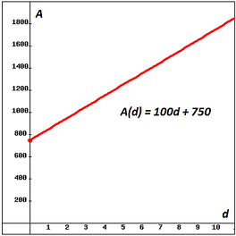
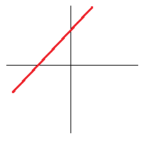
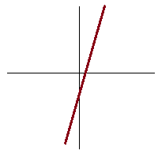
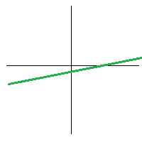
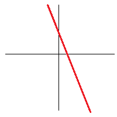
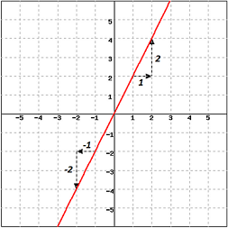

Most students entering this course are already familiar with the basic mechanics of graphing lines. Recapping very briefly: the equation for a line is $y = mx + b$ where $m$ and $b$ are constants. Note that $b$ is the $y$-intercept and $m$ is the slope. This form of the equation for a line is sometimes called the slope-intercept form because the slope and vertical intercept are clearly seen.
Example 2A-1: Any equation that can be written in slope-intercept form is the equation for a line. So, $2x-5y = 15$ represents a line since $$ \begin{align} 2x-5y & = 15\\ -5y & = -2x+15\\ y & = \frac{2}{5}x-3. \\ \end{align}$$ We see that the $y$-intercept of this line is at $y = -3$ and the slope is $\frac{2}{5}.$
Not all equations represent lines. For example, $y = x^2 + 3x$ does not define a line. It cannot be written in the form $y = mx + b.$
There are two purposes of reintroducing this material in this course. The first is to frame the discussion as linear functions modeling behavior. The second is to deepen your understanding of the important concept of slope.
Consider the following examples. Sam is a salesman—he earns a commission for each sale. Alice is a technical support representative—she earns $\$100$ each day. The chart below shows their bank accounts over the week.
| After this many days ($d$) | Sam’s bank account ($S$) | Alice’s bank account ($A$) |
| $0$ (*what they started with) | $\$75$ | $\$750$ |
| $1$ | $\$275$ | $\$850$ |
| $2$ | $\$275$ | $\$950$ |
| $3$ | $\$450$ | $\$1,050$ |
| $4$ | $\$480$ | $\$1,150$ |
| $5$ | $\$530$ | $\$1,250$ |
Sam has some extremely good days (such as the first day, when he made $\$200$) and some extremely bad days (such as the second day, when he made nothing). Alice makes exactly $\$100$ every day.
Let $d$ be the number of days, $S$ be the number of dollars Sam has made, and $A$ be the number of dollars Alice has made. Both $S$ and $A$ are functions of time. But $S(d)$ is not a linear function, and $A(d)$ is a linear function.
Definition: Linear Function A function is said to be “linear” if every time the independent variable increases by $1$, the dependent variable increases or decreases by the same amount.
Once you know that Alice’s bank account function is linear, there are only two things you need to know before you can predict her bank account on any given day.
| So, the linear function that gives how much money is in Alice's bank account $d$ days after she opened the account is $A(d) = 100d + 750.$ |  |
The $y$-intercept is relatively easy to understand. As discussed in Section 1C, the vertical intercept may be calculated from the formula of a line by evaluating the formula at $0$. Verbally, it is where the function is when the independent variable is $0$; graphically, it is where the line crosses the $y$-axis.
Example 2A-2: Find the $y$-intercept for the line defined by the equation, $x + 3y = 6$. Solution: The $y$-intercept is the value of $y$ when $x=0$, so $0 + 3y = 6$, and dividing both sides by $3$ we get: $y=2$. So, the $y$-intercept is $2$. Note that we could have put the equation in the slope-intercept form to find the intercept:
| $x + 3y$ | $= 6$ | Subtract $x$ from both sides |
| $3y$ | $= -x+6$ | Divide both sides by $3$ |
| $y$ | $= -\frac{1}{3}x+2$ |
| Definitions of Slope | ||
| In our example | In general | On a graph |
| Each day, Alice’s bank account increases by $100$. So the slope is $100$. | Each time the independent variable increases by $1$, the dependent variable increases by the slope. | Each time you move to the right by $1$, the graph goes up (or down) by the slope. |
| Between days $2$ and $5$, Alice earns $\$300$ in $3$ days. $300/3=100$. Between days $1$ and $3$, she earns $\$200$ in $2$ days. $200/2=100$. | Take any two values of the independent variable with their corresponding values in the dependent variable, divide the change in the dependent variable's values by the change in the independent variable. This is the slope. | Take any two points on the line. The change in $y$ divided by the change in $x$ is the slope. This is often written as $m = \dfrac{\Delta y}{\Delta x}= \dfrac{y_2 - y_1}{x_2-x_1}$ , or as $m = \dfrac{\mbox{rise}}{\mbox{run}}$ |
| The higher the slope, the faster Alice is making money. | The higher the slope, the faster the dependent variable increases. | The higher the slope, the faster the graph rises as you move to the right. |
So slope does not tell you where a graph is, but how quickly it is rising or falling. Looking at a graph, you can get an approximate feeling for its slope without any numbers. Examples are given below.
| A slope of $1$: each time you go over $1$, you also go up $1$. |  |
| A steep slope of perhaps $3$ or $4$. |  |
| A gentle slope of perhaps $\frac{1}{2}$. |  |
| A horizontal line has a slope of $0$: each time you go over 1, you don't go up at all! The equation of a horizontal line is: $y = 0x + b$ and simplified: $y = b$. | |
| This line goes down as you move left to right. So the slope is negative. It is steep: maybe a $-2$. |  |
| A vertical line has no slope. It has no change in the horizontal direction and since we cannot calculate division by zero, we say the slope is not defined. Note that having no value is not the same as having the value of zero. The equation for a vertical line is just $x = c$ where $c$ is the $x$-intercept of the line. |
The slope of a line may be calculated from any two points on the line, $(x_1, y_1)$ and $(x_2, y_2)$. The "rise" is found by finding the difference between the two $y$ values, $y_2 - y_1$ and dividing by the "run", the difference in the $x$ values: $x_2 - x_1$. Note that you must find the differences in the same order. You may not calculate the change from $y_1$ to $y_2$ and then the change from $x_2$ to $x_1$. So the formula for finding the slope of a line from two points on the line is: $$\mbox{Slope through two points } ( x_1, y_1) \mbox{ and } ( x_2, y_2) = \dfrac{y_2 - y_1}{x_2 - x_1}$$
Example 2A-3:
| Looking at the graph at the right, you can see it doesn't matter which points you use as long as you are consistent in finding the differences between $x$ and $y$ values: slope $= \frac{2}{1} = \frac{-2}{-1} = 2$. |  |
Example 2A-4: To find the slope, $m$, of the line passing through the points, $(2, -5)$ and $(4, 1),$ we calculate the rise and divide by the run. It doesn't matter which point you take to be the $(x_1, y_1)$ or $(x_2, y_2)$ so let $(2, -5)$ be the "first" point and $(4, 1)$ be the "second" point" $$m = \frac{y_2 - y_1}{x_2 - x_1}=\frac{1 - (-5)}{4 - 2} = \frac{6}{2} = 3$$
Example 2A-5: Find the slope of the line passing through the points, $(3, 2)$ and $(-1, 2).$ This time we let $(3, 2)$ be the "first" point and $(-1, 2)$ be the "second" point" $$m = \frac{y_2 - y_1}{x_2 - x_1}=\frac{2 - 2}{-1- 3} = \frac{0}{-4} = 0$$ Since the slope is zero, the line is a horizontal line with all $y$-coordinates equal to $2$.
Example 2A-6: Find the slope of the line passing through the points, $(5, 0)$ and $(5, 3).$ Taking $(5, 0)$ for the "first" point and $(5,3)$ be the "second" point" $$m = \frac{y_2 - y_1}{x_2 - x_1}=\frac{3 - 0}{5- 5} \mbox{ Oops, we are in trouble here!}$$ Since $5 - 5 = 0$ and we cannot divide by zero, the slope is not defined. This is a vertical line where all the points have an $x$-coordinate of $5$, i.e. the line passes vertically through $x = 5$ on the $x$-axis.
Example 2A-7: Find the equation from a graph
| This method is pretty easy if the slope is an integer or simple fraction like $\frac{2}{3}$ or $-\frac{1}{2}$. Using the previous graph, which we show again at the right, recall the slope is $2$ and we can see that the $y$-intercept is $0$. |
Of course if the slope was $\sqrt{2}$, we'd want a better method of finding the equation.
Example 2A-8: Find the equation from the slope and a point If we know the slope, we are half way done! Let's find the equation for the line with slope $\frac{1}{2}$ which passes through the point $(-3,5).$ Since we know the point is on the line, it must be a solution to the equation for the line: $y = \frac{1}{2}x + b$. If we plug in the values $x = -3$ and $y = 5$ into the equation, we can find the value of $b:$ $$ \begin{align} 5 & = \frac{1}{2}(-3) + b\\ 5 & = -\frac{3}{2} + b\\ 5 + \frac{3}{2} & = b \\ \frac{10}{2} + \frac{3}{2} & = b \\ \frac{13}{2} & = b \\ \end{align}$$ So, the equation for this line is $y = \frac{1}{2}x + \frac{13}{2}.$
Example 2A-9: Find the equation from points on the line Let $(-2,3)$ and $(1,7)$ be points on a line. If we find the slope, we may use the same process as the previous example to find the equation. The slope is: $$m = \dfrac{7-3}{1-(-2)} =\dfrac{4}{3}.$$ We now know half of what we need for the equation: $y = \frac{4}{3}x + b$, where $b$ is the $y$-intercept. Both points are on the line and so if we pick a point and plug in the $x$ and $y$ values, we can find $b$: $$ \begin{align} 7 & = \frac{4}{3}(1) + b\\ 7 - \frac{4}{3} & = b\\ \frac{21}{3} - \frac{4}{3} & = b\\ \mbox{So, } b & = \frac{17}{3} \\ \end{align}$$ Hence, the equation is $y = \frac{4}{3}x + \frac{17}{3}$.
We could have used the other point: $3 = \frac{4}{3}(-2) + b$. In this case, $b = 3 + \frac{8}{3} = \frac{9}{3} + \frac{8}{3}= \frac{17}{3}$ and $b$ is still equal to $\frac{17}{3}.$ So remember, finding the $b$ from one point is enough to do just one time.
Example 2A-10: Find the equation for the line through the points $(-2,1)$ and $(3,1)$ Solution: The slope is: $$m = \frac{1 - 1}{3 - (-2)} = \frac{0}{5} = 0$$ A line with zero slope is horizontal. It is defined by the fact that all of it's $y$-coordinates are the same. In this case, $y = 1$ is the equation for the line. Even if you take the time to write out the slope-intercept form to find the $y$-intercept, you will find: $$ \begin{align} y & = 0x + b\\ 1 & = 0(-2)+b \\ 1 & =b. \\ \end{align}$$ And, even though it took a little longer, we get the equation, $y = 1,$ for this line. Please don't write $y = 0x + 1$ for the equation. Even though it is technically correct, it's better to simplify the equation since $0x + 1 = 1.$
Example 2A-11: Find the equation for the vertical line through the point $(-2,5).$ Solution: The slope of a vertical line is not defined since it has no change in the horizontal direction. So, there is no value for the $m$ in the slope-intercept form: $y = mx+b$. How can we proceed if we don't have a value to work with? The equation for a line must define it--tell us "where" it is and what it looks like. The defining aspect of a vertical line is the fact that all of it's $x$=coordinates are the same. In this case, the $x$ values of all the points on the line are $-2.$ So, the equation for the line is $x = -2$ since it tells all we need to know about "where" the line is and what it looks like.